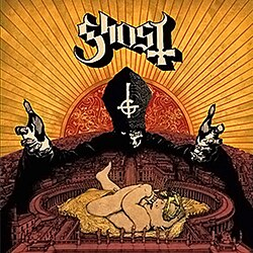
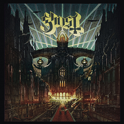
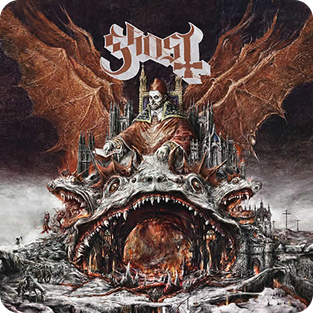
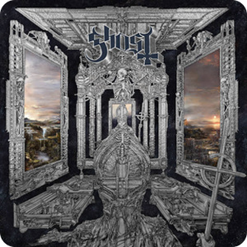

Ghost é uma banda sueca de heavy metal formada em 2006 na cidade de Linköping. O grupo é conhecido por suas performances teatrais, identidade visual misteriosa e sonoridade que combina elementos de heavy metal, rock progressivo, rock psicodélico, com influências do rock alternativo e pop rock contemporâneo.

Meu nome é Mayara, fui a desenvolvedora e idealizadora desse projeto que apresenta uma banda que gosto muito. Escolhi o Ghost por ser uma banda que desperta meu interesse não apenas musicalmente, mas também por toda a sua identidade visual, teatralidade, simbologia e narrativa construída ao longo dos anos. O que mais me encanta é a capacidade da banda de transformar música em uma experiência: cada álbum, personagem e apresentação possui uma identidade própria, criando um universo que vai muito além dos palcos.

Os rituais são conduzidos por nossos sacerdotes que seguem uma longa linhagem de Papas Emeritus, onde o primeiro da história fora Papa Nihil e a partir dele vieram os Emeritus, sendo que o mais atual é o Papa Perpetua (Papa Emeritus V).
Esses que são personagens recorrentes e que marcam o andamento da história da banda e dos álbuns, sendo que cada um tem estilo, modo de agir e personalidades distintos um do outro.








Os álbuns que marcaram a trajetória da congregação.